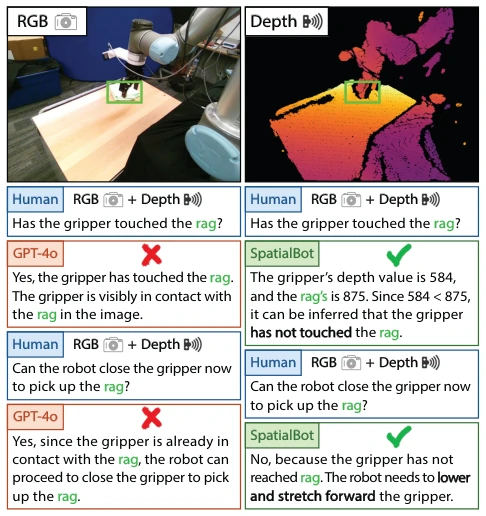
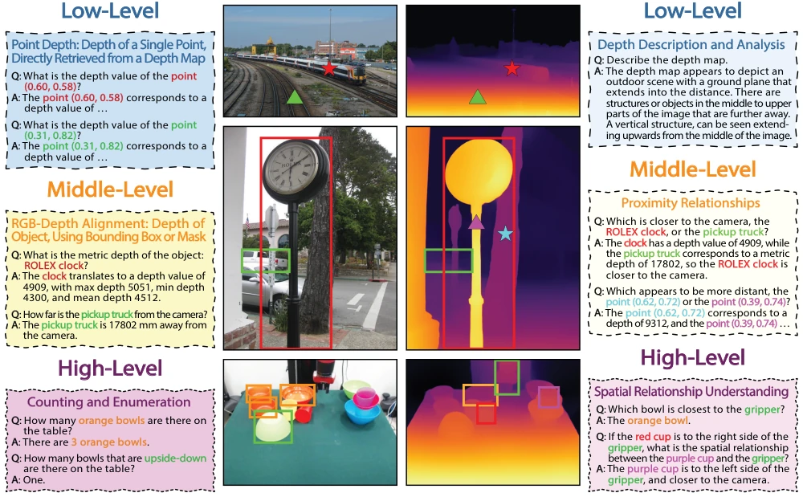
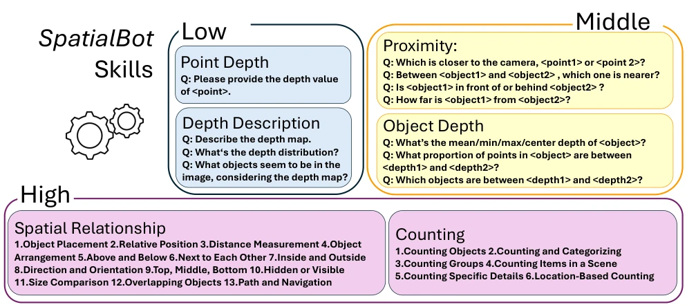
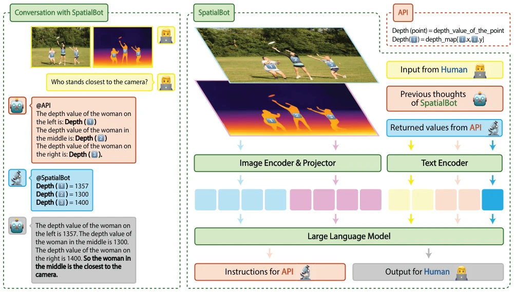
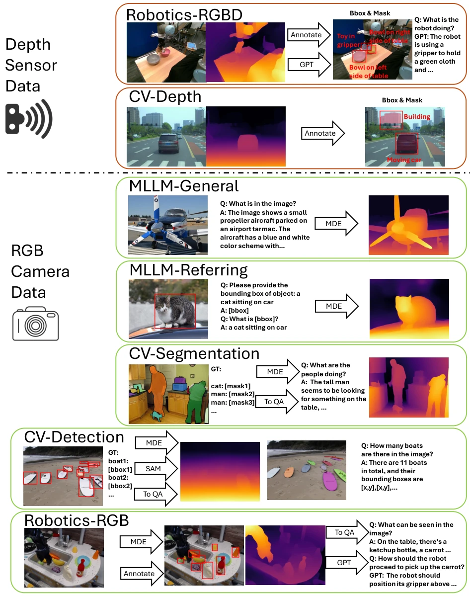
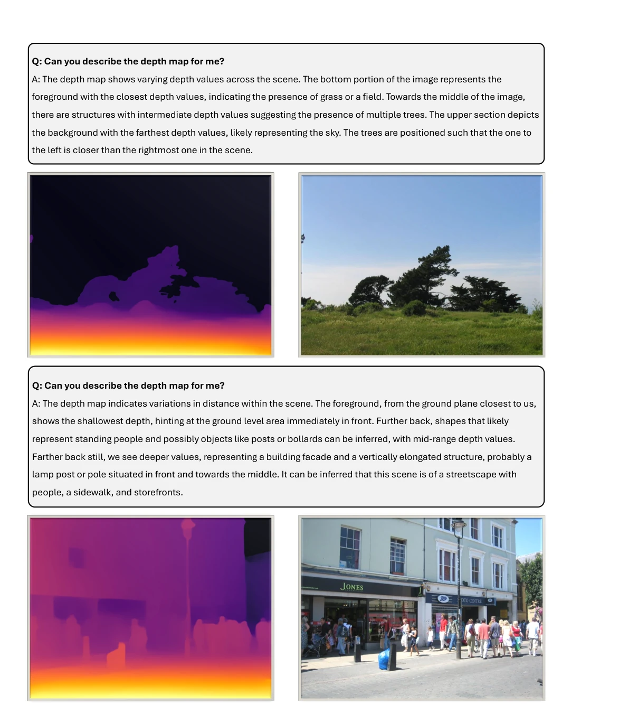
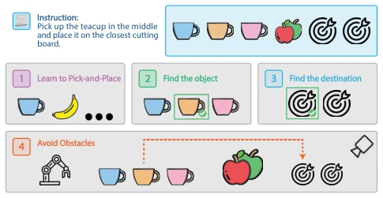
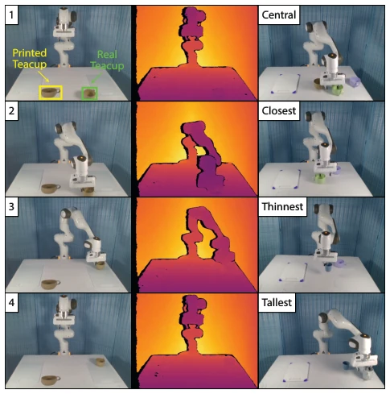
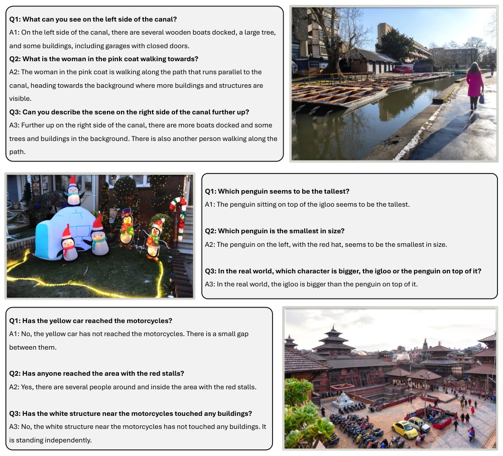
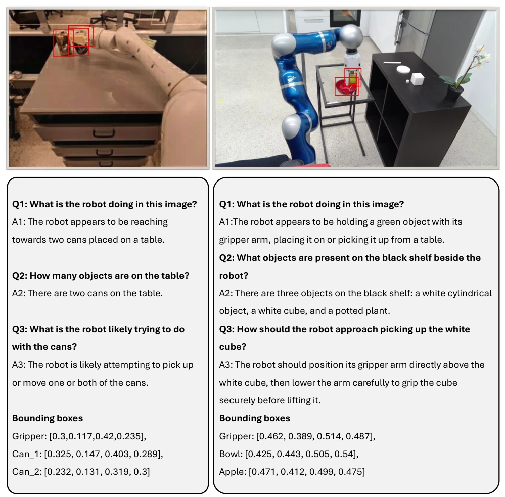

This paper forcibly injects depth maps into VLMs, attempting to address the "flat eye" chronic issue. SpatialBot is indeed superior to GPT-4o in spatial perception, particularly in distinguishing who touched whom, but essentially it still relies on external depth APIs and RGB-D data; pure RGB VLMs remain pure RGB VLMs. The dataset is quite large, but depth estimation relies on ZoeDepth [8]; what if the sensor breaks? However, for embodied intelligence, accurately judging distance is always better than guessing blindly. It counts as filling the stereo vision shortcoming for VLMs, but there is still a gap to true "spatial intelligence", after all, depth maps are pre-existing, not calculated by the model itself.
VLMs are strong in 2D understanding but weak in spatial understanding, making it difficult to achieve real-world tasks [1]. There are three main problems: 1) Training data is only RGB, lacking depth understanding; 2) Lack of depth-related training datasets; 3) Inconsistent indoor/outdoor depth scales. This leads to errors during robot grasping and navigation. Existing work such as SpatialVLM infers only from 2D, with insufficient accuracy. Embodied AI requires millimeter-level precision, so introducing depth maps is necessary. Existing VLMs inputting depth maps directly perform poorly due to lack of relevant training. Monocular Depth Estimation is fast but hardware precision is insufficient.

Figure 1. SpatialBot has better spatial understanding ability than GPT-4o. From a single RGB image, even a human can not judge whether the gripper has touched the rag. GPT-4o fails even if look- ing at both RGB and depth images. SpatialBot first obtains depth information of target objects from the depth map, and then judges that the gripper has not yet touched the rag.
The overall architecture is based on Phi-2/3 or Qwen [6]. Input consists of RGB and depth map pairs, with depth maps being optional. Innovations include: 1) Depth encoding: Using uint24 or three-channel uint8 to store mm-level depth, solving the indoor/outdoor scale inconsistency problem, retaining original values for VLM calculation. 2) Progressive training: The SpatialQA dataset is divided into three layers; the low layer learns depth description and point queries, the mid layer learns object depth and proximity relations, and the high layer learns spatial reasoning and counting. 3) Depth API: The model outputs a specific format to call the API for precise depth values, avoiding inaccurate direct depth prediction and enhancing reasoning capability. 4) SpatialQA-E: A manipulation dataset for embodied tasks, containing real/printed object distinction, training robot grasping and obstacle avoidance. Additionally, during training, the model is only allowed to call the API for partial data, while remaining data must answer directly from the depth map, forcing the model to learn depth encoding. For robot tasks, it outputs a 7 DoF action vector, adopting delta pose encoding to improve control precision.

Figure 2. The proposed SpatialQA dataset consists of basic, middle, and high-level VQAs in general VLM tasks, aiming to (a) help VLMs understand depth images, (b) let VLMs learn to align RGB and depth images, (c) enable VLMs to do high-level tasks better by understanding both RGB and depth images, as depth images provide clear boundary information and spatial relationships.

Figure 3. SpatialBot masters three levels of skills: (a) understanding depth images (b) aligning these RGB and depth inputs, and performing proximity comparison, (c) applying RGB-D for spatial relationship understanding and counting.

Figure 4. The architecture of SpatialBot. It takes a pair of RGB and depth images as input, where depth images are optional. SpatialBot can choose to call Depth API if it need accurate depth information.

Figure 5. Image sources and RGB to RGB-Depth dataset conversion pipeline. RGB and depth information, captions or conversations about the images, bounding boxes or masks, and corresponding detailed descriptions of objects are required to make SpatialQA dataset.
SpatialBench was used to evaluate spatial capability, comparing GPT-4o and the Bunny series. SpatialBot significantly outperforms baselines on depth estimation and spatial relations (Table 1). General VLM benchmarks (MME, GQA) also show improvement. On embodied tasks, tested on the Franka arm, RGB-D has a higher success rate than RGB (Fig 8). Ablation studies show depth information helps with counting and position judgment. On the MME benchmark, SpatialBot performance is better than the Bunny baseline. In robot tasks, the RGB-D variant is significantly better than the RGB-only version in grasping success rate, validating the necessity of depth information for spatial reasoning.

Figure 9. Sample data of depthmap understanding in SpatialQA.
其他图片Other Figures

Figure 6. SpatialQA-E involves spatial relationships in robot ma- nipulation.

Figure 7. SpatialQA-E demonstration. Left: 4 steps in picking up the real teacup and putting it on the right cutting board relative to the camera. We print the teacup as a distraction. It’s easier to tell between the real and printed teacup from the depth map. Right: 4 sample settings in SpatialQA-E, where we specify spatial relationships.

Figure 10. Sample data of spatial understanding in SpatialQA.

Figure 11. Sample data of robot scenes in SpatialQA.